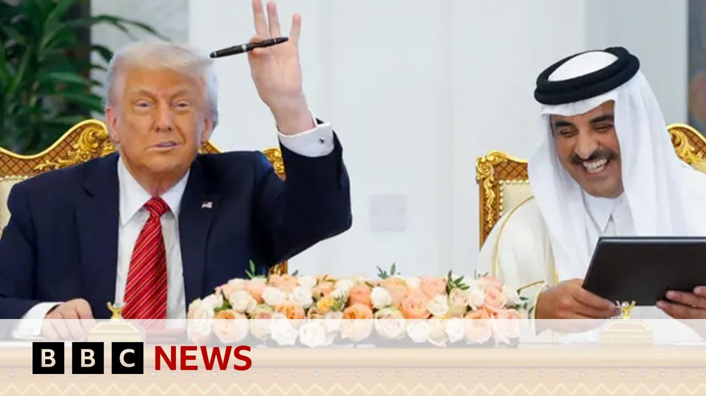

【---】
Summary: Is Donald Trump allowed to accept $400m luxury plane as a gift? | BBC News
摘要： 唐纳德·特朗普可以接受价值4亿美元的豪华飞机作为礼物吗？| BBC新闻

⏱️ Estimated Reading Time: 13 min
Well, President Trump's visit to Qatar follows his decision to accept what he has called a free, very expensive airplane from Qatar's royal family.
特朗普总统访问卡塔尔之际，他决定接受卡塔尔王室赠送的一架免费昂贵飞机，此举引发了对费用和外交问题的批评。
It has been criticized by Democrats in the United States and even some Republicans as well who say there is no such thing as a free plane and it will cost taxpayers hundreds of thousands of dollars to refit it.
特朗普总统访问卡塔尔之际，他决定接受他所谓的卡塔尔王室赠送的一架免费且非常昂贵的飞机。
So, let's talk a bit about that controversy and also what Donald Trump's trying to do in the Middle East with Naomi Lim who's White House reporter for the Washington Examiner.
美国民主党人甚至一些共和党人也批评了这一决定，称世上没有免费的飞机，改装它将花费纳税人数十万美元。
Thank you very much indeed for being with us once again.
因此，让我们与《华盛顿观察家报》白宫记者娜奥米·林谈谈这一争议，以及唐纳德·特朗普试图在中东做什么。
What would tell us a bit more about this row over the plane, what it's all about, and what have people been saying.
非常感谢您再次与我们在一起。
So, this plane, a $400 million Boeing 747, uh has been promised to uh President Trump from the Qatari royal family.
请您多谈谈关于这架飞机的争议，它到底是怎么回事，以及人们一直在说什么。
And this is a huge deal because it's the most expensive presidential gift in history.
这架价值4亿美元的波音747飞机已被卡塔尔王室承诺赠送给特朗普总统。
And what Democrats and as you rightly mentioned, some Republicans are concerned about is that nothing in this world comes for free.
这是一件大事，因为这是历史上最昂贵的总统礼物。
And so there are already complaints about the way that Trump is conducting diplomacy, particularly in the Middle East because there are so many intricacies surrounding uh his personal finances and and his company uh the Trump Organization that is now currently run by his sons.
民主党人以及您正确提到的一些共和党人担心的是，这个世界上没有什么是免费的。
Um how they're all interconnected.
因此，已经有人对特朗普的外交方式提出抱怨，尤其是在中东，因为围绕他的个人财务以及现在由他儿子经营的特朗普集团存在许多复杂问题。
And this is just one more uh piece in that puzzle.
它们是如何相互关联的。
Now, in his defense, what Trump actually says in his defense is that, you know, it's going to be a temporary fix.
这只是这个谜题中的又一块拼图。
The problem domestically is that Boeing promised him a plane that won't be ready now until 2027.
现在，特朗普为自己辩护时表示，这将是一个临时解决方案。
And he wants something that he can fly around the world in right now.
国内的问题是，波音公司承诺给他的飞机要到2027年才能准备好。
And so, he's saying that he's it's a temporary Air Force One, but as you said, it would have to be retrofitted with all of the gadgets um to be swept for potential bugs and things like that.
而他想要现在就能飞往世界各地的飞机。
and then it would be donated to his presidential library.
因此，他说这是一架临时的“空军一号”，但如您所说，它必须改装所有设备，以排查潜在的窃听器等。
So he's saying it's not technically a gift to him.
然后它将被捐赠给他的总统图书馆。
It's technically a gift to the defense department and and the US people before that it goes to the presidential library which you know he says he won't use but you know that could change in the future.
因此，他说从技术上讲，这不是给他的礼物。
Uh and so this is the big thing as he touches down in Qatar today and arguably it's something that's overshadowed this this trip that's been really important to him as his first major uh foreign feray other than the pope's funeral last month.
从技术上讲，这是给国防部和美国人民的礼物，之后才会进入总统图书馆，他说他不会使用，但未来可能会改变。
He doesn't seem to care though, does he, Donald Trump?
因此，这是今天他抵达卡塔尔时的大事，可以说这件事掩盖了这次对他非常重要的访问，这是他上个月参加教皇葬礼后的首次重大外访。
I mean, one Republican senator, uh, Ran Paul from Kentucky said, "I just think it's not worth the appearance of impropriy, but um, President Trump presumably knew about all about that appearance, but doesn't seem to doesn't seem to bother him too much.
不过，他似乎并不在意，对吧，唐纳德·特朗普？
I mean, this is classic Trump response or his strategy to respond to any kind of controversy, and that's to dig in further.
肯塔基州共和党参议员兰德·保罗说：“我只是认为这不值得看起来不妥，但特朗普总统可能知道这一点，但似乎并不太在意。”
uh we saw him posting into the we hours local time about defending uh this choice which the Qataris actually say is still up in the air.
这是典型的特朗普回应或他应对任何争议的策略，那就是进一步坚持。
They haven't they said it's still under consideration.
我们看到他在当地时间凌晨发帖为这一选择辩护，而卡塔尔方面实际上表示此事尚未确定。
Um yeah, exactly.
他们说这仍在考虑中。
Exactly.
嗯，是的，没错。
Um and he was sort of saying, you know, I would be stupid not to accept this deal.
确实。
And it's very similar to how he uh defended his um t his lack of releasing his t tax reforms or his tax sorry his tax um uh taxes because he would say that you know I would be uh silly to try and pay more in my taxes my personal taxes um than you know it was necessary and so this is something that we've seen but you know to that end about Republican criticism I think it's been really interesting to see the type of people that are complaining about it for example Lara Luma who is incredibly online consu conservative activist and she is sort of saying you know why would we accept um a donation from someone uh like like the Qataris who have uh ties potentially uh with uh financing terrorism uh as your previous guest mentioned the Muslim Brotherhood and so that's something that people are you know worried about but as I mentioned before I mean I don't think anything will stop this when Trump has an idea in his head uh sometimes it goes ahead regardless of the optics what about the optics since you mentioned them of this whole visit to the Gulf States.
他似乎在说，不接受这笔交易才是愚蠢的。
He's been in Saudi Arabia.
这与他不公布税务改革或税务（抱歉，他的税务）的辩护非常相似，因为他会说，试图支付比必要更多的个人税款是愚蠢的。因此，这是我们看到的情况。但关于共和党的批评，有趣的是看到抱怨的人的类型，比如极度活跃的保守派网络活动家拉拉·卢玛，她在质疑为什么要接受像卡塔尔这样可能与资助恐怖主义有联系的人的捐赠，正如您之前的嘉宾提到的穆斯林兄弟会。这是人们担心的事情，但正如我之前所说，当特朗普脑子里有想法时，有时会不顾形象继续推进。既然您提到了这次海湾国家之行的形象问题，那您怎么看？
He's now in Qatar as we've mentioned.
他去了沙特阿拉伯。
What do you how do you assess the significance um of this visit?
如我们所说，他现在在卡塔尔。
And what what what is what is Donald Trump trying to achieve, do you think, with this trip?
您如何评估这次访问的重要性？
Well, what I thought it was really interesting is that his first presidential trip uh when he was first elected president eight years ago was to the same region.
您认为唐纳德·特朗普这次访问试图实现什么？
uh and so I think that it really uh sort of emphasizes the importance of the region to him as he sort of said politically uh diplomatically as well as sort of business commercially.
我认为非常有趣的是，他八年前首次当选总统后的首次外访也是同一地区。
Uh and I think this is a way to do that particularly after President Joe Biden's administration made the point to de prioritize the Middle East in favor of Asia.
因此，我认为这确实强调了该地区对他的重要性，无论是政治、外交还是商业层面。
And so I think that's something that is is being um made of here something that he's said one of his aims is to come home with $1 trillion worth of investment.
我认为这是在乔·拜登政府决定将中东降级以优先考虑亚洲之后的一种方式。
Now, that's a number that the the government the White House likes to band it around.
因此，我认为这是他所说的目标之一，即带回价值1万亿美元的投资。
When you look at sort of the details of the proposals that are coming out, you know, particularly, I think Saudi Arabia um wants to put in $600 billion, and they've already sort of said they're going to spend $142 billion on defense spending uh with the US, which is double their budget.
这是白宫喜欢宣扬的数字。
Um and so, we have to be careful uh with these big promises, what that actually means uh if they ever come to fruition.
当您查看提案的细节时，特别是沙特阿拉伯计划投入6000亿美元，并且他们已经表示将在与美国国防合作上花费1420亿美元，这是其预算的两倍。
I think the other thing that's really interesting about this trip is the distance that Trump has put between himself and Israeli Prime Minister um BB Netanyahu because this is usually uh if he goes to the uh Gulf States, he'll also try and make a trip to the Israel, he's not doing that amid the Hamas uh the war with Hamas.
因此，我们必须谨慎对待这些大承诺，看看它们是否真的能实现。
Um and the other thing that I think that will be really interesting is not only you mentioned also the Syrian president um the sit down with him the first time a US leader has met with someone uh in the official Syrian government for 25 years also was most recently on the US terrorism watch list.
我认为这次访问另一个有趣的地方是特朗普与以色列总理内塔尼亚胡保持距离，因为通常如果他访问海湾国家，也会尝试访问以色列，但这次他没有这样做，因为哈马斯战争。
So that was a big thing and the other thing that I'm watching is sort of developments with all the other negotiations that are going around in this region.
另一个有趣的事情是，您提到的与叙利亚总统的会面，这是25年来美国领导人首次与叙利亚政府官员会面，而后者最近还在美国恐怖主义观察名单上。
For example, there were um the fourth round of talks about an Iran a new Iran nuclear deal in Oman as well as Thursday's meeting um in Qatar with uh potentially the Russian President Vladimir Putin and the Ukrainian President Vladimir Zalinski.
因此，这是一件大事，我还在关注该地区其他谈判的进展。
And so I think those are the things that are are the things to watch on this 4-day trip.
例如，在阿曼举行的第四轮伊朗新核协议谈判，以及周四在卡塔尔可能举行的俄罗斯总统普京与乌克兰总统泽连斯基的会晤。
And uh you mentioned his meeting with the interim president of Syria, Ahmed Al- Shar, who who um was, as you said, did have an American bounty on his head until very recently.
因此，我认为这些是这次4天访问中值得关注的事情。
This is the sort of classic Donald Trump again, isn't it?
您提到他与叙利亚临时总统艾哈迈德·阿尔-沙尔的会面，后者直到最近还被美国悬赏通缉。
He likes a bold move and to meet him then to lift sanctions on Syria, albeit at the request of the the Saudis and the Turkish government, I think.
这又是典型的唐纳德·特朗普风格，对吧？
But anyway, these are bold diplomatic brush strokes, aren't they?
他喜欢大胆的举动，会见他并解除对叙利亚的制裁，尽管我认为这是应沙特和土耳其政府的要求。
Yeah.
但无论如何，这些都是大胆的外交举措，对吧？
Yeah.
是的。
And I do think um it was sort of a way to undercut this idea that I mean I wrote a story earlier this week saying you know there's a more of an emphasis on business deals rather than diplomacy and this is um a point or a development that counters that uh and I think it is a really big deal as you sort of said again it shows uh the closeness of of Trump's relationship with the Saudi crown prince as you said it sort of came at the request of him.
是的。
Uh there are sort of um you know sort of other sort of things within this idea of lifting the sanctions.
我认为这是一种削弱这种观点的方式，我本周早些时候写了一篇文章，称这次访问更强调商业交易而非外交，而这一点或这一进展反驳了这一点。正如您所说，这确实是一件大事，再次显示了特朗普与沙特王储的密切关系，正如您所说，这是应他的要求。
You know this idea that he wants um Syria to normalize relations with Israel.
解除制裁的想法中还有其他一些事情。
He wants to really make them crack down on any terrorists that are in their in their territory as well as sort of try and counter ISIS.
他希望叙利亚与以色列关系正常化。
So these things are sort of part of his larger um Middle East uh vision which is about commerce um as well as sort of getting rid of extremism.
他希望他们真正打击境内的恐怖分子，并试图对抗ISIS。
That's what they said going into this meeting.
因此，这些事情是他更大的中东愿景的一部分，该愿景涉及商业以及消除极端主义。